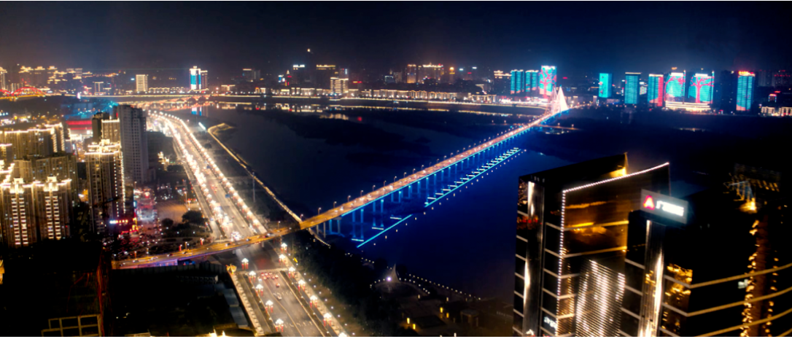

在四川，有这么一个城市。它是拥有2200多年历史的文化名城，三国文化和春节文化都在这里发源，南方丝绸之路以这里作为起点。它是名将辈出的“三总故里”，培养了朱德、罗瑞卿、张澜这三名些伟人，在中国发展进程中举足轻重。它是国家级园林城市，拥有丰富的旅游资源。嘉陵江穿城而过，赋予其独有的灵秀俊美。它就“川北心脏”——南充！随着近年经济的飞速发展，它正散发着让世人惊叹的魅力！
南充，国内外闻名遐迩的丝绸城。“天上取样人间织，满城皆闻机杼声”，这脍灸人口的诗句，是对著名“蚕桑之乡”、”丝绸之城”南充的形象写照。中国四大蚕茧、丝绸生产出口基地之一，四川最大的丝绸工业中心。西汉，南充丝绸成为朝廷贡品；唐宋，南充”顺庆大绸”饮誉京城，畅销丝绸之路；果州之绫，被日本皇室珍为国宝；1915年，南充丝绸在巴拿马国际博览会上盖群芳而获金奖。南充丝绸畅销30多个国家和地区，其出口丝和绸曾分别占四川省出口丝、绸的50%、80%，被外商誉为“万能丝”、“万能绸”。南充丝绸具有“享天宝物华之誉，胜苏杭品质之优“的美名。
上世纪80年代后期，南充市五星花园中心矗立起一座雕塑：三位体态丰腴的姑娘，身披赭色薄裙，姿态翩跹，腰间的丝绸缎带蜿蜒飘逸，似在深情地向南来北往的人们诉说南充“丝”事。这座题为“丝绸之城”的雕塑，被市民亲切地称为“丝绸女神”。2018年，南充市政府对已沧桑垢面的“丝绸女神”雕塑进行翻新。新落成的雕塑采用紫铜材质，气势恢宏、丰神俊逸，雕塑基座写有“丝绸之城”四个大字，并刻着一幅采桑图，几株葳蕤的桑树下，有人提着篮子忙着采摘桑叶，有人接应传送。“丝绸女神”魂兮归来，让人触摸到南充人传承丝绸文化的脉搏。
南充市以嘉陵江为依托，有顺庆区、嘉陵区、高坪区三区和南部、蓬安、仪陇等六县，在2000多年的历史中，南充各县市因为嘉陵江的孕育，形成了以嘉陵江为主线的文化旅游带。嘉陵江，南充的“母亲河”，串起了南充境内7个县城。壮阔的嘉陵江从陕甘的崇山峻岭而来，一路奔涌，在南充留下298公里的柔美身段。38岁唐晚诗人李商隐在赴任途中第一次看见嘉陵江，激动不已，写下“千里嘉陵江水色，含烟带月碧如蓝”，的千古名句，皓月当空，江水一色，美哉！嘉陵江。

南充是“三国文化”的发祥地，世称“并迁双固”的陈寿著文史兼美的不朽名著《三国志》。南充被联合国定为世界三国文化研讨会永久会址。南充市境内三国址较多，诸如万卷楼、张飞庙、谯周墓、王平墓、瓦口关古战场等，为其形成了独特的“三国文化”。
作为三国文化源头，南充有着太多的三国文化元素。一本书，一个人，一座楼，林木葱郁的西山不仅是南充不朽的文化地标，也是三国文化极为重要的溯源地。张飞庙、谯周墓、王平墓，千百年来也在默默诉说着南充与三国文化的渊源。